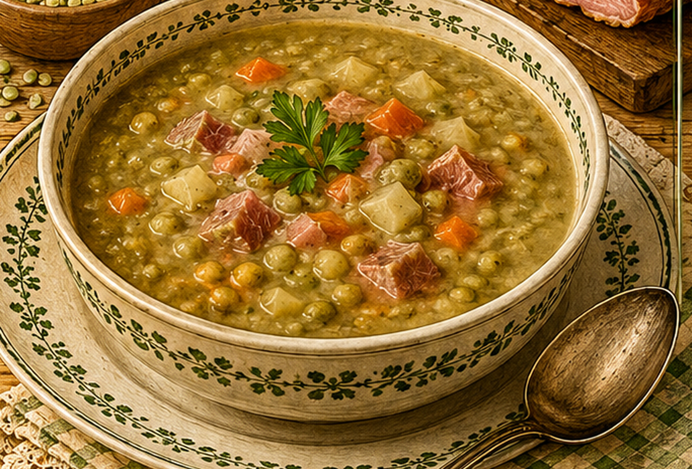

Erbsensuppe mit Pökelfleisch
Eine herzhafte Erbsensuppe mit Pökelfleisch, Kartoffeln und einer leichten Mehlbindung.

Originale Überlieferung
Die Erbsen werden eingeweicht und im Einweichwasser mit Pökelfleisch und Suppengemüse langsam gekocht. Gewürfelte Kartoffeln kommen hinzu. Aus Fett und Mehl wird eine Einbrenne bereitet; damit wird die Suppe gebunden und mit Salz und Pfeffer abgeschmeckt.
Moderne Übertragung
Über Nacht eingeweichte Erbsen garen mit Pökelfleisch und Gemüse. Kartoffeln machen die Suppe sättigend; eine kleine Mehlschwitze sorgt für die historische Bindung.
Zutaten
- 250 g getrocknete Erbsen
- 2 l Wasser
- 250 g Pökelfleisch
- 250 g Kartoffeln
- 1 Zwiebel
- etwas Suppengemüse
- 40 g Fett
- 20 g Mehl
- Salz und Pfeffer
Zubereitung
- Erbsen über Nacht in Wasser einweichen.
- Erbsen mit Einweichwasser, Pökelfleisch, Zwiebel und Suppengemüse langsam weich kochen.
- Kartoffeln würfeln und während der letzten 30 Minuten mitgaren.
- Fett erhitzen, Mehl einrühren und eine helle Einbrenne bereiten.
- Mit etwas Suppe glatt rühren, zurück in den Topf geben und mit Salz und Pfeffer abschmecken.